Sådan bruger du siden
Find den blok, du skal bruge, og følg linket til den side, der forklarer den. I MakeCode klikker du på gruppens navn i listen for at åbne gruppen. Nogle blokke ligger under Avanceret (Advanced) eller under "... mere" (... more) nederst i en gruppe.
Grundlæggende (Basic)
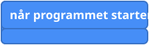
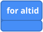
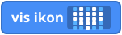
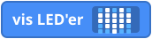

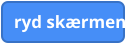
Input
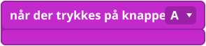
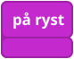

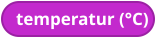
Pins
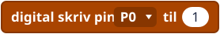
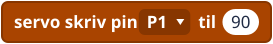
Musik (Music)

Logik (Logic)

Løkker (Loops)
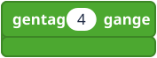
Variabler (Variables)

Matematik (Math)
Spil (Game)


Lærernoter
- Billederne er forenklede tegninger, og farverne ligner MakeCodes, men er ikke helt de samme.
- Hvor en blok ligger i MakeCode, kan ændre sig fra version til version af editoren. Tjek gruppenavnene på jeres skærm.